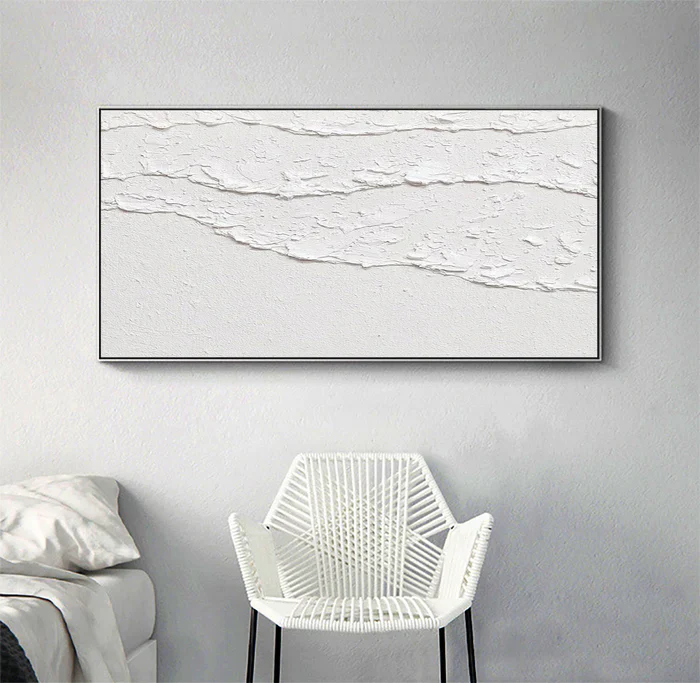

Minimalism is more than just a design trend — it's a way of life. In this post, we explore how minimalism can bring clarity and focus to your daily routine.
What is Minimalism?
Minimalism is about stripping away the unnecessary to focus on what truly matters. It can be applied to design, lifestyle, and even work habits.
Benefits of a Minimalist Lifestyle
From reducing stress to saving money, minimalism offers a variety of benefits. It encourages intentionality and mindfulness.
How to Start Your Minimalism Journey
Begin by decluttering your home, simplifying your schedule, and focusing on your top priorities.